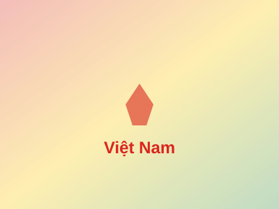

Vietnam Culture and Pride

Lễ hội truyền thống lớn nhất trong năm của người Việt Nam, đánh dấu sự chuyển giao giữa năm cũ và năm mới theo âm lịch.
Ngày 10 tháng 3 âm lịch, toàn dân tộc về Đền Hùng để tưởng nhớ công ơn các vị Vua Hùng dựng nước.
Ngày hội của trẻ em với đèn lồng, bánh Trung Thu và những câu chuyện truyền thống về Chú Cuội, Chị Hằng.
Ngô Quyền đánh tan quân Nam Hán, kết thúc hơn 1000 năm Bắc thuộc, mở ra thời kỳ độc lập tự chủ.
Trần Hưng Đạo lãnh đạo quân dân đánh tan 300,000 quân Nguyên-Mông, giữ vững độc lập dân tộc.
Dưới sự lãnh đạo của Chủ tịch Hồ Chí Minh, nhân dân Việt Nam giành chính quyền, lập nên nước Việt Nam Dân chủ Cộng hòa.
Chiến thắng lịch sử "lừng lẫy năm châu, chấn động địa cầu", đánh bại chủ nghĩa thực dân Pháp.
30/4/1975, hoàn thành sự nghiệp giải phóng dân tộc, thống nhất đất nước, mở ra kỷ nguyên mới.
Quân đội nhân dân Việt Nam được thành lập tại Cao Bằng, đánh dấu bước ngoặt quan trọng của cách mạng Việt Nam.
Trung với Đảng, hiếu với Dân, sẵn sàng chiến đấu hy sinh vì độc lập tự do của Tổ quốc, vì hạnh phúc của nhân dân.
Không ngừng xây dựng và phát triển, từng bước hiện đại hóa để bảo vệ vững chắc Tổ quốc Việt Nam xã hội chủ nghĩa.
Loại hình nghệ thuật truyền thống độc đáo của Việt Nam, với lịch sử hơn 1000 năm tuổi.
Trang phục truyền thống thanh lịch, duyên dáng của phụ nữ Việt Nam, biểu tượng văn hóa dân tộc.
Nền ẩm thực phong phú, đa dạng với hương vị hài hòa, tinh tế, được thế giới công nhận và yêu thích.
Loại hình ca hát cổ truyền độc đáo, được UNESCO công nhận là Di sản văn hóa phi vật thể đại diện của nhân loại.
Đàn tranh, đàn bầu, sáo trúc... những nhạc cụ truyền thống tạo nên âm thanh đặc trưng của dân tộc.
Nghệ thuật viết chữ truyền thống, kết hợp giữa chữ Hán và chữ Nôm, thể hiện tinh hoa văn hóa.